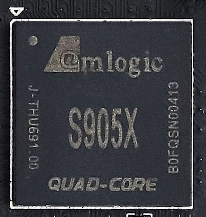

Amlogic S905W/S905D/S905X/S905L/S805X/S805Y/S905Z
|
 Amlogic S905X chip | |
| Manufacturer | Amlogic |
|---|---|
| Name | S905W/S905D/S905X/S905L/S805X/S805Y/S905Z |
| Architecture | aarch64 |
| CPU | 4x 1.2/1.5/2 GHz Cortex-A53 |
| GPU | Mali-450 MP3 |
| Year | 2016 |
| Process | 28nm |
| Mainline | yes |
| Community Page | https://linux-meson.com/ |
| Components | |
| CPU |
Works
|
| UART |
Works
|
| Storage |
Partial
|
| USB |
Works
|
| Display |
Works
|
| GPU |
Works
|
| Pinctrl |
Works
|
| I²C |
Works
|
| SPI | |
| Audio |
Works
|
| Video |
Partial
|
| Thermal |
Works
|
| NPU | |
| Suspend | |
| Ethernet | |
{kind=link}
Amlogic S905W/S905D/S905X/S905L/S805X/S805Y/S905Z SoCs are media player SoCs mainly used in Android set-top boxes.
They are very similar to each other and are part of the GXL Amlogic SoC family.Here are the differences between them:
High-end Chip :
- S905W : It capable of hardware decoding 4Kp60/30 H.265/H.264, VP9 and has 100M ethernet phy,1G ethernet mac,VP9 hardware , camera interface and TS inputs, 4 X Cortex-A53@2GHZ
- S905D : Seem to identical to S905W , but support ISO7816 IN for DVB
Mid-range Chip:
- S905X : A slightly lower clock variant (CPU cores up to 1.5 GHz) of S905W
- S905L : Identical to the S905X except for the lack of VP9 decoding, camera interface and TS inputs.
Low-end Chip:
- S805X : a slightly lower clocked (CPU cores up to 1.2 GHz) and can only decode 1080p60/30 H.265/H.264 , VP9.It is a stripped down variant of S905X.
- S805Y : Used in Xiaomi Mi TV Stick (xiaomi-aquaman), be identical to the S805X.
Unknown :
- S905Z : Used in the Amazon Fire TV 3 (amazon-needle), identical to the S905X except for the cant decode VP9 via hardware decoding.
There are also -h variant of Amlogic S905W/S905D/S905X/S905L/S805X/S805Y/S905Z. it is a variant of the soc that has include Dolby/DTS licenses.
Devices
| Device | Codename | Chipset | Mainline | booting |
|---|---|---|---|---|
| Amazon Fire TV 3 | amazon-needle | Amlogic S905Z | No | |
| Amediatech X96 Mini | amediatech-x96-mini | Amlogic S905W | Y | Yes |
| Home x x1 | AK1708m-16 | Amlogic S905X | No | |
| Libre Computer AML-S805X-AC-V1.0 | librecomputer-lafrite | Amlogic S805X | Y | Yes |
| Libre Computer AML-S905X-CC-V1.0 | librecomputer-lepotato | Amlogic S905X | Y | Yes |
| Xiaomi Mi Box 3 | xiaomi-once | Amlogic S905X-H | Y | Yes |
| Xiaomi Mi TV Stick | xiaomi-aquaman | Amlogic S805Y | No |
Boot process
See: Amlogic#Boot process
BL1 looks for a header (named @AML header) at different offsets depending on the storage media:
- On an SD card or eMMC: offset 512 (512 bytes completly ignored by BL1), header and checksum from offset 528 to 623, payload at offset 4608 onwards
There's a bug where, because of the zero-offset requirement on eMMC, MBR structures cannot coexist, requiring tweaks to allow an MBR parition table to coexist. Further reading: https://github.com/LibreELEC/amlogic-boot-fip/pull/8
BL2 is signed by using a proprietary utility from Amlogic called aml_encrypt_gxb, but there's a replacement called gxlimg. See https://github.com/repk/gxlimg. It has been confirmed to work on Libre_Computer_AML-S905X-CC-V1.0_(librecomputer-lepotato)
Then BL2 loads the following:
- BL30/SCP_BL2: System control processor firmware
- BL31: EL3 Runtime Software
- BL32: OPTEE (optional)
- BL33: U-Boot
All bootloader stages except U-Boot are proprietary. BL31 can be replaced with upstream Arm Trusted Firmware-A. There's also an ongoing effort led by User:F to reverse-engineer BL2 and port U-Boot SPL.
Status
GPU and hardware acceleration
Works.
IR RX
Works
Audio
S/PDIF audio works, but HDMI is untested
X11
Works fine. A custom configuration file is needed else it crashes (included).